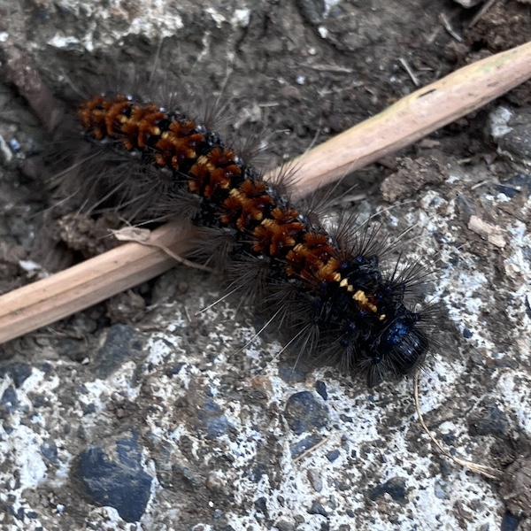
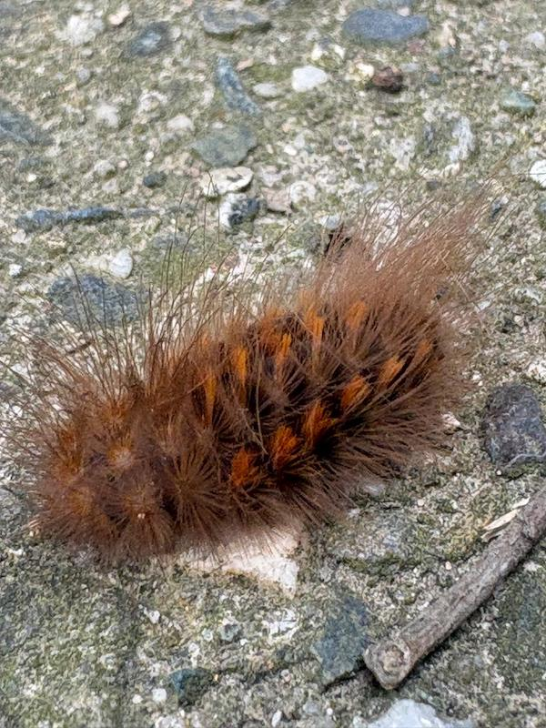
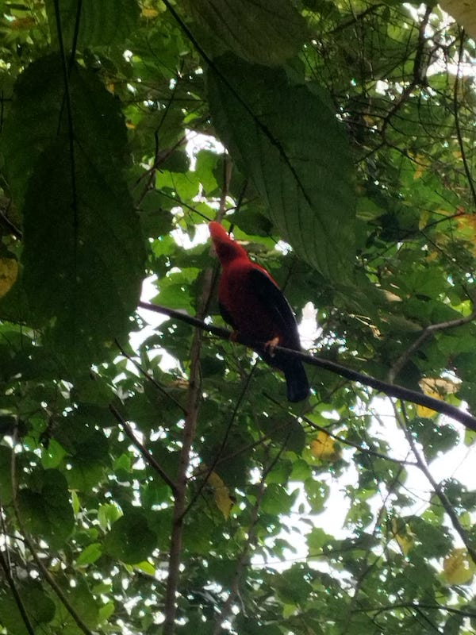

Animals
Caterpillar

I found this caterpillar in Jardin, Colombia.
Wolly Bear

This is a Wolly Bear and my friend found it in Enivigodaeo,Medellin, Colombia.
Andean Cock of the Rock

I went birdwatching in Jardin,Antioquia,Colombia and spoted a few of these birds.